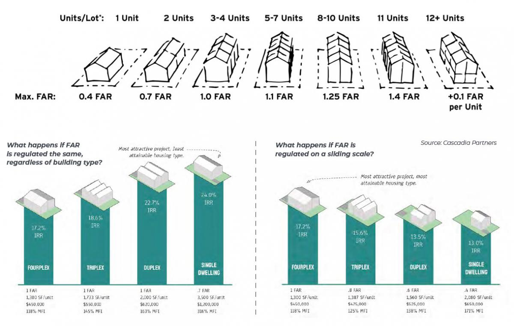
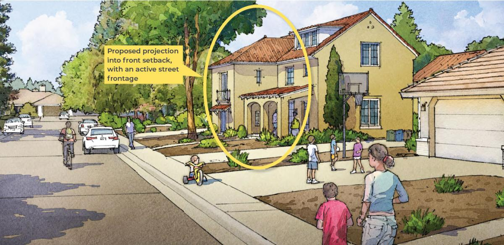

When It Comes to Missing Middle, Incentives Matter
April 22, 2026
This member commentary post does not necessarily reflect the views of Asheville For All or its members.
The City of Asheville revealed recently that it plans to bring some pro-housing changes to the city’s residential development code to the City Council this summer. They are likely to include eliminating parking minimums citywide, as well as allowing duplexes on all residential lots.
This is potentially big news.
Late last year, Asheville For All ran a campaign to draw attention to the city’s lack of movement on residential housing reforms, and it seemed to work. We have since had discussions with some city councilors and some city staff. We have yet to see the text of these recently announced amendments, but it’s nice to see the ball rolling again.
Are these proposed changes enough? Are they what we hoped to see? Are they everything that is recommended by Asheville’s 2023 Missing Middle Housing Study? I think we would say “no” to all three.
But I don’t want to harp on that right now.
What I want to suggest is that if this is what Asheville is focusing on for this year—duplexes and parking mandate abolition—that could be a great start, but if and only if the city considers how incentives might factor in too.
The Portland Pushback
Earlier this year on this blog, we published an examination of Portland’s success at implementing missing middle reforms and seeing significant new development of new duplexes and quadplexes.
We received a lot of positive feedback on this post, and we got some skepticism too. People wondered if the same outcomes would happen here. They pointed to other cities like Durham, where perhaps the patterns of development—what housing types got built, and which neighborhoods they appeared in—may have been less desirable or less anticipated.
Coincidentally, an article then appeared in the Washington Post about this very subject.
The article notes that other cities, such as Minneapolis (which was cited across the media as a success story when it abolished both exclusionary single family only zoning and parking mandates) haven’t seen as much growth as anticipated in multi-family homes in the lower “missing middle” range. (Minneapolis has succeeded overall in growing its infill housing stock and suppressing rent growth, but that’s a story that seems to be more about larger buildings.)
It attributes the Portland difference to one thing: an incentive that allows duplexes and quadplexes greater flexibility than would a single family home that would be developed on the same lot.
In places like Minneapolis, the article notes, areas that once only allowed single-family-homes were now allowed duplexes and quadplexes. But if the zoning code constrained buildings to a particular height, or a particular building footprint relative to the footprint of the overall lot, that didn’t change. So if the size of the lot, and other zoning constraints limited the size of a house to, let’s say, 2,000 square feet, and you wanted to make a quadplex there, you could only make those four homes a maximum of five hundred square feet each. And in some neighborhoods this might be undesirable. At the very least, a developer might do the math and say that a single-family home would still make more money for them.
Portland did something different than these other cities. They implemented a “sliding scale FAR.” FAR stands for “floor to area ratio.” In layman’s terms, a sliding scale FAR just means that a duplex is going to be able to push the limits on the total square footage that a building can have. Maybe in the above example, a duplex can now be up to 2,500 square feet. And a triplex could push the limits even more—maybe 3,000 square feet, to be divided among those individual units.

I wrote about the general idea here a while back, based on Asheville’s 2023 Missing Middle Housing Study’s recommendation to limit the size of single-family-homes. In effect, this is what the study was talking about. A sliding scale FAR is a way to limit the size of single family homes as a means to incentivize buildings with more homes, it’s just doing it in a way that’s context sensitive; rather than setting a definitive cap on the square footage of single-family homes, the cap is relative to the overall size of the lot.
Multifamily or McMansions?
In theory and in practice it seems, a sliding scale FAR will get Asheville more infill multifamily homes than if not implemented.
I also think it may have an influence on where those multifamily homes are built.
Remember that one of the fears in Asheville, and it’s one we heard in response to the Portland question, is that we may not see the same results as Portland in terms of where the new multifamily homes are built. For reasons that I raised before, we want at least some of our infill housing growth to be happening in core, higher-wealth, higher-amenity residential neighborhoods.
It’s something of a truism that development follows demand, which is to say that it follows land value. As a corollary truism, the higher the land value, the more developers are going to put into the value of the structure itself. (This is in part because when land value costs are high, builders need to promise their creditors a greater return, and this will only happen if they can build big relative to their costs. It’s the reason why no one builds a single family home in downtown Manhattan.)
So consider a residential lot in Chestnut Hill (North Asheville) or Falconhurst (West Asheville) that is ready for development. With high demand, there is opportunity in building there. A sliding scale FAR would mean that a single-family-home approach would only net so large of a home. This is why a sliding scale FAR is sometimes called an “anti-McMansion” measure. With the measure in place, the builder may find that a multifamily structure would be more profitable to build—especially in higher-value areas.
Leveraging Existing Multifamily Zones
Let’s play devil’s advocate: In Asheville, a sliding scale FAR might not actually do much for duplex construction in the places that were formerly designated for single family homes only. After all, Portland’s missing middle project had several degrees on its sliding scale—not just single family homes and duplexes, but also triplexes all the way up to six-plexes.
Asheville seems to be focussing on duplexes and only duplexes, at least for this year. Does a two point scale even really make sense?
This was my first thought. And then it occurred to me that the city could use this opportunity to reform our existing residential multifamily zones, and promote more infill in those places too.
I used to live in East West Asheville, and one thing that struck me when looking at my neighborhood—think of the rectangular region from Hanover St. on the west to Wellington on the east—was that a lot of the area was zoned “RM8” but there wasn’t a whole lot of multifamily housing. I would see tear downs and infill, walking around my neighborhood, but always single family homes.
A sliding scale FAR could make a difference here, in an area adjacent to Haywood Road and walkable to an elementary school.
Asheville For All has been making the case repeatedly, over the last few years, that broad geographic application of pro-housing zoning reforms is the absolute best way to prevent gentrification and to reverse current displacement trends. By opening up new areas to duplexes while at the same time modestly increasing the “zoned capacity” of existing multifamily neighborhoods, Asheville can be sure that these upcoming changes won’t lead to speculation or shocks to land values.
(Note also that the idea of abolishing all residential parking mandates, which the city is said to be moving forward with, aids in accomplishing the same effect.)
One Caveat?
It’s worth noting that unlike many cities, Asheville does not currently have any FAR restrictions. Someone far smarter than me, an actual city planner(!), would need to determine what a sliding scale FAR would look like if it were to be imposed in Asheville in order to incentivize more infill housing in a way that does not impose new undue restraints on existing multifamily zones. And maybe for Asheville the solution isn’t FAR at all, but rather some other kind of sliding scale or incentive.
In any case, the city does have some funny rules in existing multifamily residential zones that need to go—rules that effectively set density limits and make multifamily housing less feasible. For example, in the “RM8” zone, which on paper appears to promote multifamily development, the rules only allow single family homes or duplexes if the lot is under 5,000 square feet, and they further only allow one additional home for each additional 1,000 square feet of lot size above 4,000 square feet.
I’ve heard varying reports from Ashevilleans who know more than I do about whether or not these rules are actually constraining factors. But at least in the abstract, they seem to run in the opposite direction of a sliding scale FAR (especially as the city has stated that building smaller-sized homes is one of its goals), and if the constraints of parking mandates are going to be removed, these may become more relevant.
(There is also a “gross floor area” limit of 12,000 square feet, which isn’t necessarily relevant to the missing middle conversation in Asheville right now, but does seem to disincentive the kinds of courtyard apartments on larger lots that are suggested in Asheville’s 2023 Missing Middle Housing Study.)
Other incentives?
Are there other ways that Asheville could promote modest infill through incentives?
Streetscapes and Setbacks
Sacramento’s missing middle program includes an incentive that allows multifamily to have a smaller front setback if the building has a front porch or similarly “promote[s] active streetscapes.”

Portland’s missing middle changes, we might note, allow for multifamily housing that does not face the street. These are sometimes called “slot homes.” Think, for example, about a row of townhomes that might be turned sideways so that a shared driveway goes down a deep lot and townhomes are lined up along the driveway, rather than the street. For some people, this is not ideal. (I think they’re fine.) Using Sacramento’s approach could be a way to have our cake and eat it too. Asheville could allow these slot homes, but at the same time incentivize homes that face the street.
Fixing the Tree Canopy Preservation Ordinance
Another incentive that the city might take up, although this might be more relevant to the coming discussion around the city’s “urban forest master plan,” is to fix the way that our current tree ordinance penalizes multifamily homes.
At the moment, a developer in Asheville can build a single family home and could conceivably bulldoze every tree on the lot, and not have to pay a penalty. (There are exceptions, such as for steep slopes, or if the homes are being built on subdivided land.) If they want to build multifamily (3 units or more) on that same lot, though, tree canopy preservation rules come into play.
To me, this is a good example of a perverse incentive, at least in the abstract. I don’t know how much of a difference including one- and two-unit construction in tree canopy preservation would make. But I do think these are the kinds of things that, when added up, will make a difference as Asheville continues to enact even modest zoning code reforms to promote infill residential housing.
Sliding Scale FAR is Practical and Within the Realm of Possibility
Back to the main topic. Here’s some good news.
First, Asheville’s own 2023 Missing Middle Housing Study Displacement Risk Assessment cited sliding scale FAR as an anti-displacement strategy, noting its success in Portland. (See page 134.)
And second, we have good evidence that Asheville’s Missing Middle Implementation Team, which was working to iron out the details of Asheville’s approach to missing middle before it was shut down in early 2024, was talking about sliding scale FAR already. This is not an idea that we are bringing to Asheville out of left field.
At Asheville For All, we’re looking forward to reading the text amendments to our zoning code that are being cooked up. I hope that in order to maximize their benefit—and to aid in the anti-displacement benefits that adding more diverse housing options brings—they’ll include something like a sliding scale FAR.
This member commentary post does not necessarily reflect the views of Asheville For All or its members.